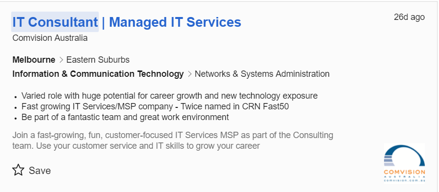
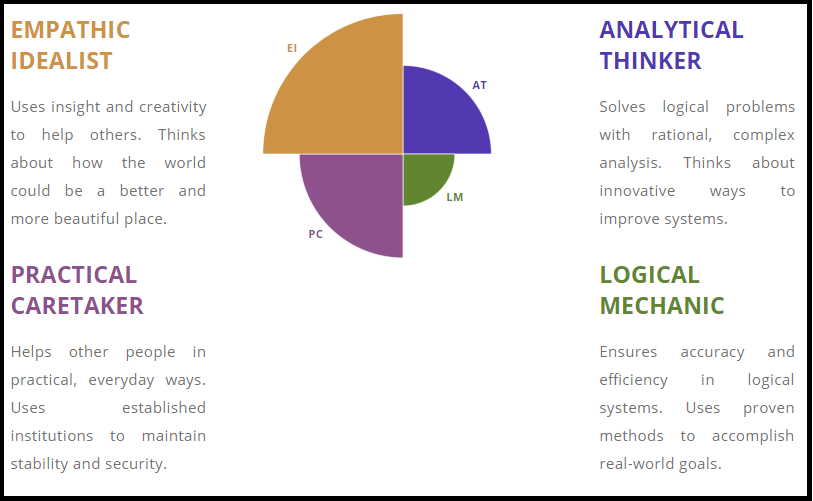
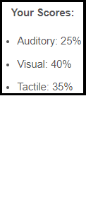
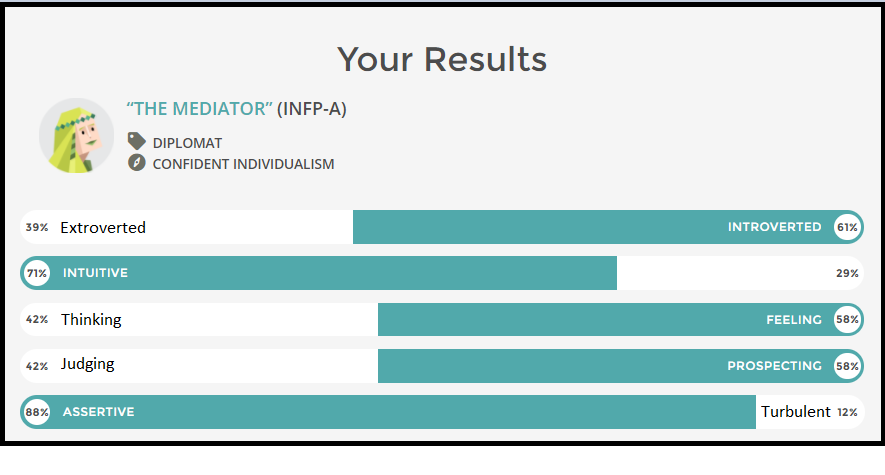

Personal Information
Hey! My name is Anthony, but most of my friends call me Frendo (my last name), Ears (because of my massive ears) or Penguin because on day 1 of Year 7, I showed up with an injured foot and I was walking like a penguin would.
My student number is S3658519 and the email I use predominately for all my important life things such as RMIT, job applications, GitHub etc is a.g.frendo@gmail.com. I grew up in the Western Suburbs, specifically Taylors Lakes and I attended Primary and Secondary schooling there. I always had a good relationship with my teachers and coordinators as I was typically a very quiet and good student.
I was born in Australia however I have a very rich European background. My father was born in Malta and grew up there for most of his childhood until his whole family moved to Australia where he then met my mother and raised my two sisters and I while his whole family then moved back to Malta. Although my mother was born in Australia, it was 1 year after her whole family (aunts and cousins included) moved to Australia from Sicily to start a new life. All 4 of my grandparents speak broken English as they weren’t raised to speak English and never adapted to speak it fluently. Despite me being able to learn Maltese and Sicilian dialect from my parents, I don’t speak either languages fluently. I can understand multiple words in either languages and can generally pick up what is being said even though I don’t fully understand the sentence.
My main hobby that I’ve spent thousands of hours doing whilst in High School is playing video games. I get so much enjoyment out of loading up a wide variety of genres based on the mood I’m feeling; An RPG if I have a day off and want to immerse myself into a heavy story driven open world game such as Witcher 3, which is my favourite game to date. Or maybe an FPS or MOBA and play a few games with my friends if I have a few hours to spare. I have clocked in over 5000 hours into League of Legends and have achieved the highest rank possible (Challenger), with my peak rank at 91st out of hundreds and thousands of players on the Oceanic Server.
Another hobby of mine which is tied into my first is eSports. Although my family and I follow the Carlton Football Club in the AFL, I attend few matches and loosely follow it throughout the season. I am absolutely obsessed with eSports for many different games with League of Legends being the one I follow the most. I watch most of the North American and European matches, and even a few South Korean and Chinese matches. I have a very competitive nature when it comes to gaming and wanting to be the best at what I do and watching professional players helps with that. When I was at my peak in skill, I was playing and winning against the professional players in the Oceanic region quite often.
Interest in IT
I’ve always had a passion for technology and gaming since an early age, one of my very first experiences with technology was playing Pokémon Red and Blue on a Game Boy. Even playing solitaire and other games on computers running Windows 97 or Crash the Bandicoot and Spyro on a PlayStation 1. Experiences like this continued onto other consoles and handheld devices in later iterations but when my passion really sparked was when I got my own computer on my 10th birthday. Being able to download and play games and do anything of my own free volition made every experience so enjoyable to me. I haven’t had any official IT experience such as working for a company however I have built my own computers and helped friends with theirs for the past few years. My passion for gaming goes beyond what’s on the screen in front of me and continues into the hardware that makes it all happen.
There were a few reasons as to why I chose to come to RMIT, the first of which being is it being very reputable. From all the family, friends and people I spoke to that went to RMIT, I heard only good things. Another reason was I had many friends that were also going to RMIT, so I knew in between classes I could catch up with them. The final reason why RMIT was an excellent choice for me was of its ease of access, because I live in the western suburbs it is quite a far travel, however, the train station closest to me goes direct to city loop and I can get off at Melbourne central which is right around the corner from most RMIT buildings.
I expect to learn quite a wide variety of IT from my course and the classes I have undertaken will help me to do that. Intro to Programming which then leads on to Programming 1 and 2 will assist me greatly in learning how to code using C++, html etc. Intro to Computer Systems and Technologies will provide me with the knowledge and understanding of what each part in a computer system does and how it operates. Intro to Information Technology introduces me to the world and industry of IT and helps me with what part of IT I fit into the most. User Centred Design shows me how businesses and consumers connect with each other.
Ideal Job

As an IT Consultant your job is to help people with their problems and experiences with computers this could be from opening a web browser to figuring out which files contains malware or any other virus that is corrupting the computer. This position is somewhat appealing to me as it involves dealing with people, which I think is a strong suit for me, it’s also appealing as it uses problem solving techniques, requires a great deal of patience and a want to help others in need.
The skills, qualifications and experience that this job requires is not of a high degree compared to a senior software engineer, however is still requires more than I currently have. Just to name a few I would require a proficient level of knowledge in Windows server management, experience in some cloud-based services and desktop support. This job is also very heavy focused around customer relations and being able to work with customers to solve their issues.
The skills, qualifications and experience that I currently posses for is job is very basic. Although I have basic desktop support knowledge from troubleshooting my family and I’s problems, I certainly don’t have any experience with windows server management, PSA/RMM products or any knowledge of VMWare. The one skills I possess a great amount of is emotional intelligence, I can clearly understand and communicate with other people and thus would be somewhat desirable for this job.
My plan moving forward over the next few years to be able to be qualified for sought after by companies is by not only focusing on my studies and learning as much as I can about all fields of IT, but also to try and get some real job experience. Whether this be by an internship, volunteering or by managing to score a position somewhere in the IT industry. Also, I will dedicate whatever spare time I have to training my skills by writing code, revising old courses.
Personal Profile
Big 5 Test Learning Style Test Myers-Briggs Test
  
The personality tests depict me as an introvert who is altruistic, sympathetic and empathetic. It regards me as having high emotional intelligence and the ability to think creatively and use rationality when dealing with problems. The scores reflect me as a great people person as I don’t seek satisfaction from social status or money and can provide great insight to problems people experience in their life as well as workplace problems. The learning style test indicates that I learn best visually, however, I also learn close to equally by auditory and tactile methods.
These results would mean I work fantastic in a team environment due to my ability to communicate with others. My kind and compassionate nature allows me to have a great working relationship with my colleagues and become well respected and trusted within a team. My creative and rational sense when problem solving allows me to dissipate problems as they arise, whether that be a problem a team member is experiencing in their life, or a problem the team needs to address on the current project or with each other.
When forming a team, I would have to take into account my team members ability to communicate as well, otherwise I will find it hard to get along with someone who doesn’t want to talk and will ‘bottle up’ everything they experience and feel. I would also need to consider their work ethic, if they slack off from time to time or are underperforming, I would find it hard to have a stern word with them about the situation as I don’t enjoy making people feel undervalued or worthless. This can be avoided however if I have a good relationship with the person and they understand that my intent isn’t to make them feel worse about themselves.
Project Idea
Overview
My IT project idea is based around developing an app/system for my workplace. I currently work at a traditional Italian pizza and pasta restaurant and I think the production and efficiency could be greatly improved. A few of the key features would be an online roster for the workers to check their timetable and an integrated system that can place orders that the delivery drivers can access and check. Not only this but the chefs and pizza makers would also be able to access these via tablet or touchscreen monitors.
Motivation
The main reason for coming up with this idea is I feel a lot of errors that are usually made within the workplace come from a lack of communication or not exactly knowing what is apart of which order and an interface that clearly shows you what’s in each order would help clarify that. Another reason is for timetabling and rosters, my boss currently manages the working times for each individual in the shop which is around 40 people. I imagine this could be quite a hassle every time somebody needs a day off or is unable to make it on time and could be simplified. Also, there is currently no way to see what times you are scheduled on for unless you message/call him or go to the shop yourself and see.
Detailed Description
One of the key features for this app is an order system where and order can be placed by either a worker or a customer. A customer could place an order online via website or app which would then project to monitors in either the pizza or kitchen section depending on what was ordered. Monitors could also display the approximate time it takes for an order to be ready and when it is ready. A customer can also call up or order in person over the counter and an employee could enter the order using a tablet. Delivery drivers could also access these orders and be assigned to them by worker as an easier method of keeping track who’s doing which delivery.
Another huge feature that would make managing and accessing rosters a lot easier for both the workers and managers would be an online roster timetable. Managers could create new, adjust or remove assigned times for each worker. Employees could see what times they have been rostered on for as well as requesting times to be added, adjusted or removed and can even give a reason or explanation for it.
Another feature is a profile interface, each worker would have a profile where they could access things such as a roster timetable from Monday to Sunday, an image for their profile, contact information (Phone number, Email etc.) and even some stats such as ‘Deliveries completed’, ‘Tables served’ or ‘Hours done this month’. This is another way the managers and boss could see who their stand out employees are. Customers could also create profiles and receive special discounts and offers on their orders such as 5-10% off, free delivery within 5km or free drink and/or garlic bread with their meals.
A useful addition would be a notification and announcement system, workers would receive important notifications such as their new rosters for the week, any timetabling that has been adjusted or an announcement from a manager. Examples of an announcements are “Are there any free delivery drivers that are able to work Friday 4-9pm” or “The shop will be closed during the Easter period”.
Another but not necessary feature that can be added is an area where the head chef and managers can manage the stock and make comments about what is needed. This would be an integrated spreadsheet that tells them how much of each stock they have, how much is usually ordered and how much is currently being ordered. The advantage of this is its easily accessible by everyone managing the stock and there be less confusion about what is/isn’t needed.
Tools and Technologies
As for the hardware you would need at least 3 touchscreen tablets for serving customers in the restaurant and another 3 for taking in pick up and call up orders. 3 monitors for the pizza section (one for each oven), 1 for the kitchen and if wanted an extra for the back so the delivery drivers can see when an order is ready. Each worker would be required to have some access to a smartphone/computer with an internet connection to be able to access most things. A server would also be needed for everything to be able to receive and send information. For the software I would need some sort of app builder or build the app from scratch using any sort of code such as CSS+.
Skills Required
I would need to be quite skilled in coding to be able to create a project of this extreme as it isn’t creating a simple game such as Tetris, it is building an entire network for a business. It’s highly unlikely I would be able to create anything of such skill yet, but maybe in a year or two after I’ve completed a few programming courses.
Drawbacks
This system would be quite expensive to create, and it would be unlikely that my boss would agree to it as its cost efficiency probably isn’t worth it. If the servers are ever down or a monitor breaks, then the whole order-based system collapses. A few of the people are in their later years and have a challenging time understanding technology and probably wouldn’t be able to use the system very well. At the very least I think if I were to just develop the app itself without the crazy system that includes monitors and tablets, with a few features such as timetabling, profiles and announcements then it would be cheap, accessible and allow for some easy light efficient improvements to the workplace.